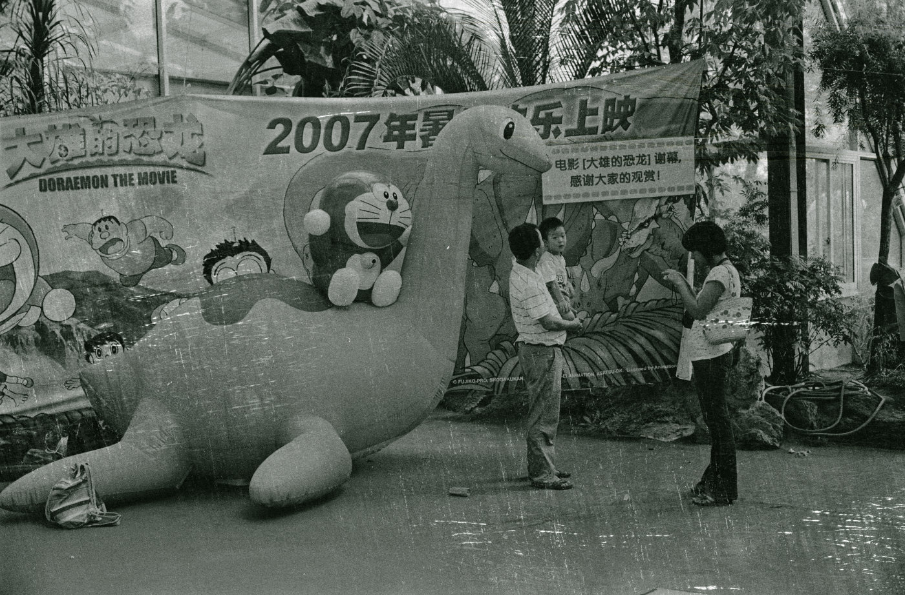

随着年龄的增长，经验逐渐丰富，我突然有了想把过去拍过的胶片归档的念头。那些底片一叠一叠地躺在干燥箱里估计有十几二十年没见天日了。
另外，我年轻时攒钱买的那台美能达Dual4底片扫描仪仍然被我珍藏到现在，它就在柜子的角落里，一切完好。
这款扫描仪只是入门级的经济型号，要知道当年搞一台高级底扫可是个昂贵的物件，但即便如此 ，我仍然认为在扫描底片这件事上，它好过大多数平板扫描仪。
但首先有个问题。经过这许多年以后，关键我的电脑系统已经全面拥抱 Mac 之后，这东西我还能驱动它吗？
想当年在我的 Windows 时代，对驱动它的扫描软件曾经折腾研究过。结论是，在黑白片扫描上，Vuescan 是最好的；在彩色负片上，Silverfast 是最好的；在彩色正片上，原厂软件是最出色的。
于是经过一圈搜索确认，发现对于我的Mac最新系统来说。只有 Vuescan 还在坚持更新适配到现在，我不禁悄悄对这家公司伸了个大拇指。
OK，扫描软件已定档 Vuescan，那么对于彩色的处理就尤为关键了，毕竟黑白才是它的强项。无法可想之余，我问了下 AI，让我吃惊且意想不到的是，AI 居然给了我一个完全不同的解决方案。
对于彩色负片的扫描质量起重要作用的是反色（去色罩）这个步骤。所以我们可以让 Vuescan 只扫描 Raw 格式的 DNG 文件，然后把这个 DNG 文件喂给 Lightroom 的 NLP(Negative Lab Pro) 插件，这个插件的去色罩能力据说已超过大多数扫描仪厂家。
哈，我茅塞顿开，居然还能这么玩。但又有座大山挡住了去路。我早已经脱离 Adobe 阵营了，不管是 Photoshop 还是 Lightroom.
AI 真是“无所不知”，它又给我出了个主意。因为我现在用 Affinity 编辑照片，而在 GitHub 上正好有人把去色罩的算法做成了 Affinity 库（类似动作），我只要下载这个 库文件，在 Affinity 里加载库后，就能一键实现底片DNG文件的去色罩流程。
结果很顺利。于是就有了现在的这个新处理流程：
1. 使用 Vuescan 扫描软件，驱动 美能达 Dual4 底片扫描仪，扫描底片为 DNG 格式的 Raw 文件；
2. 使用 Affinity 打开这个 DNG 文件，点击菜单："窗口"-->"像素"-->"库"，点击库面板右上角下拉菜单的导入宏，把在 Github 上下载的库文件加载一下，以后就可以直接一键点击它了；
3. 在点击这个宏之前，有一个关键点，就是，要先对底片DNG文件进行裁切掉黑色（或其它颜色）边框，因为这个宏会计算底片信息，黑色边框会误导数据计算出现偏差。
4. 然后，一键点击这个宏，你会发现负片突然变成了正常的彩色照片；
5. 至此就完成了彩色负片的去色罩流程。可以直接保存文件为16bit TIFF文件用于后续调色与编辑。
最后，再备忘一个中间测试过的软件，这个软件名称叫 Filmlab，虽然经过测试后发现这个软件目前只支持数码相机翻拍的底片。
但在作者发布的文章：FilmLab 2026路线图 来看，里面提到了：“Improved support for raw images from scanners, with scanner-specific color profiles”。如果以后能推出支持底片扫描仪的配置文件，那么我想到时再测试一下。
